Algorithms Part I week 1: union-find
文章目录
Theses days, I took a MOOC course named Algorithms instructed by Robert Sedgewick and Kevin Wayne from Princton University. To solidify my understanding of the course and for future reference, I'm going to write some notes on the subject. And from this post on, I decide to write technical articles in English, which is a good way to improve my written English skill.
Basic steps
There are some steps we can follow to develop a usable algorithm.
- Model the problem
- Find an algorithm to solve it
- Fast enough? Fits in memory?
- If not, figure out why
- Find a way to address the problem
- Iterate until satisfied
The Problem
In this week, the problem we want to solve is called Dynamic Connectivity.
Definition: Given a set of N objects.
- Union command: connect two objects
- Find/connected query: is there a path connecting the two objects?
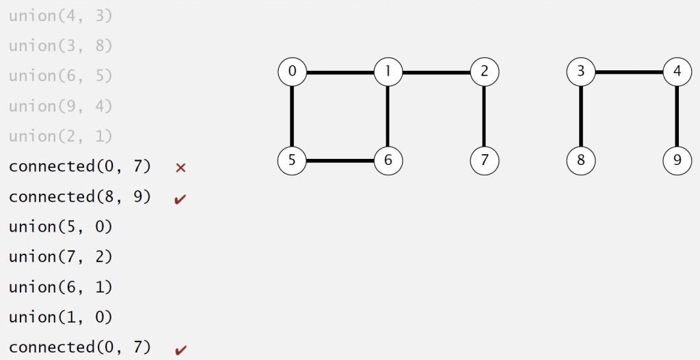
Modeling the connections
As said in basic steps section, to solve a problem, we have to model it first.Hence, when we say p is connected to q, we mean a relation that are:
- Reflexive: p is connected to q
- Symmetric: if p is connected to q, then q is connected to p
- Transitive: if p is connected to q, and q is connected to r, then p is connected to r
And we define connected component as maximal set of objectes that are mutually connected.
There are two operations to solve the problem based on our model:
- Find query: check if two objects are in the same component
- Union query: replace components containing two objects with their union
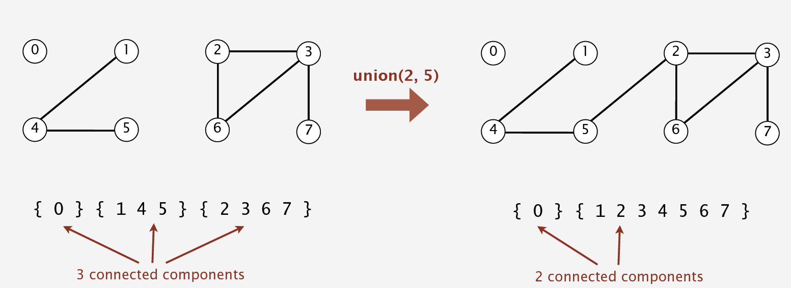
And the API we'll use is defined as following:
|
|
Implementaion 1 :Quick-find
In this implementation, we use an integer array as underlying data structure. And p and q are connected iff(if and only if) they have the same id. 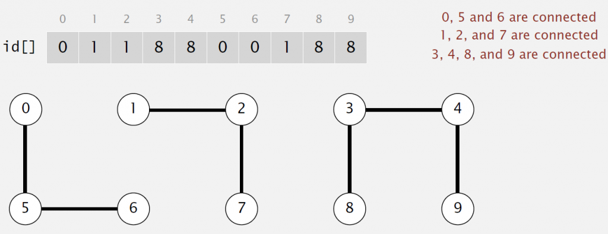
Since the implemention is so simple and to shorten the length of the article, I just paste the code here with some comments.
|
|
Quick-find is very simple and easy to implement. However, it is not a good algorithm because it is too slow.
To initialize the array, we need to access every entry, which is necessary and not bad. But to union two objects, we also have to access every entry, which is a very bad idea. So it take N2 array accesses to process a sequence of N union commands on N objects.
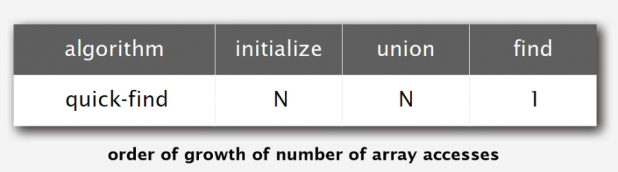
Here, we NEED know that a quadratic algorithm is NEVER a good algorithm.As time goes, we may have 10x faster CPU, but we will also have 10x larger memory, and we may want to solve a 10x bigger problem. A quadratic algorithm will take 10x as long to solve the problem. So we let's see whether implementaion 2 helps.
Implementation 2 :Quick-union
In this implementation, we also use an array as underlying data structure. But id[i] now is parent of i, and root of i is id[id[..id[i]..]](keep going until it doesn't change).
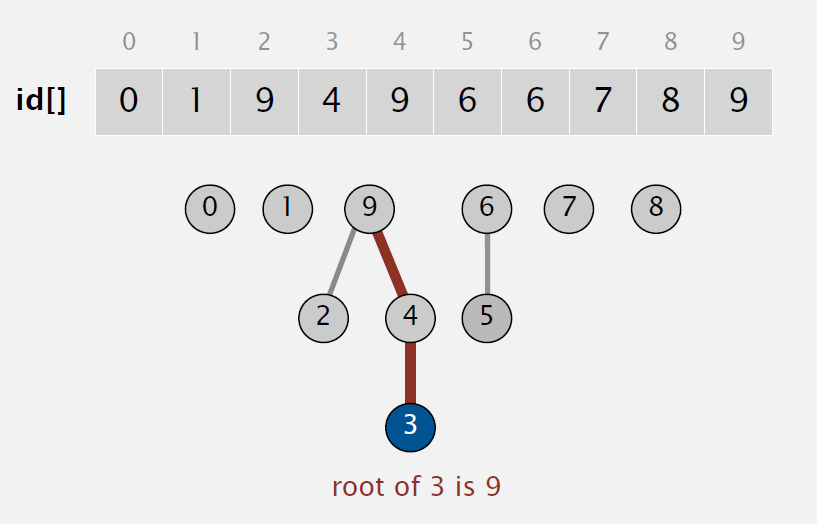
So to Find, check if p and q have the same root. To Union, just set the id of p's root to the id of q's root.
This is implementation code:
|
|
Is this implementation a good algorithm? Sadly, the answer is no. It's also too slow. To union or find, we have to find roots of p and q firstly, which in worst case need access every entry of the array.
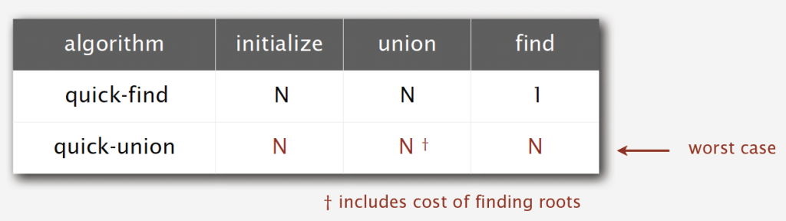
So what can we do now? We need some improvements.
Improvement 1:weighting
Quick-union is slow because after many union operations, the tree can be very tall, which makes find operation take longer time. So things can be better if we can avoid tall trees. This is what Weighted Quick-union do.
We keep track of size of each tree. And when do a union operation, instead of simply setting the id of p's root to the id of q's root, we link root of smaller tree to root of larger tree.
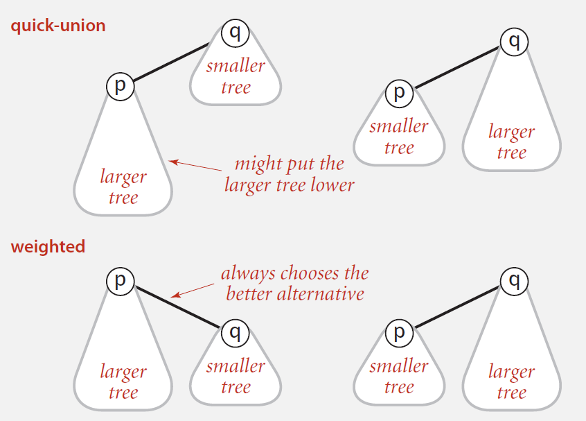
The following picture shows how effective it is. 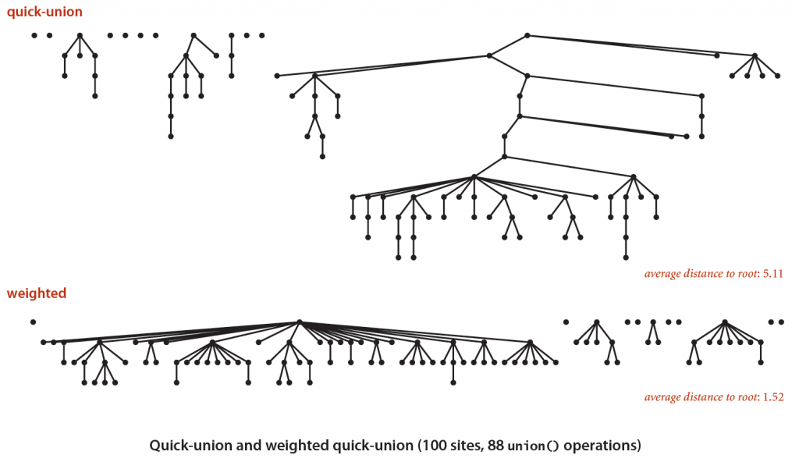
Only several lines of code are needed to gain this better result.
|
|
Is weighted quick-union a good algorithm? Let's do some analysis.
The find operation takes time proportional to depth of p and q, while union operation takes constant time, given roots. So the problem now is to figure out how tall a tree can be.
The answer is that depth of any node x is at most lgN. Why?
The depth of x increases 1 when tree T1 containing x is merged into another tree T2, which means:
- The size of tree containing x at least doubles since |T2|>=|T1|
- Size of tree containing x can double at most lgN times
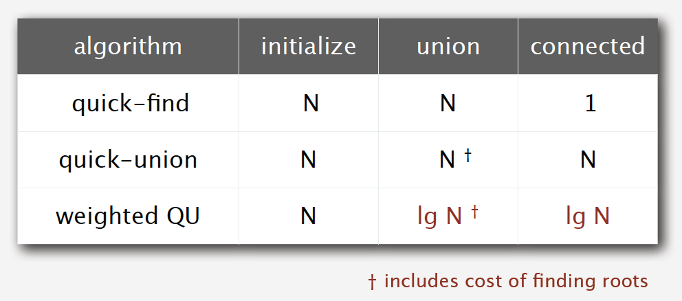
It seems we have got a good algorithm, but can we just stop here and go home happily? No! We can do better!
Improvement 2:path compression
If we can make trees even more flatter, we can gain better performance. This is what path compression does: after computing the root of p, set the id of each examined node to point to the root.
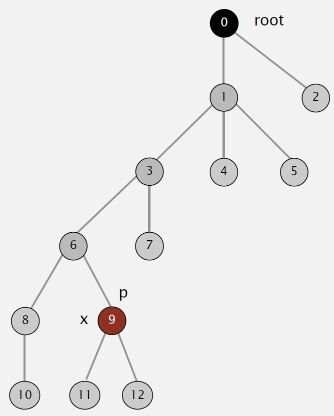
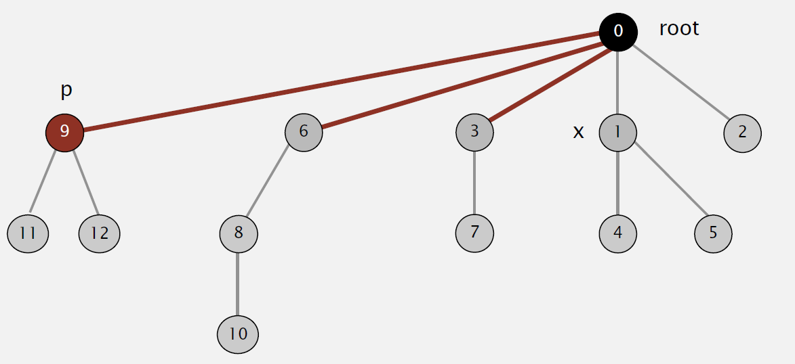
Great! The tree gets flatter, making it take shorter time to find root.
But when it comes to implementation, there are two methods to do it:
- Two-pass: add second loop to root() to set the id[] of each examined node to the root.
- One-pass: make every other node in path point to its grandparent.
The former seems exactly what we want to do, but the latter is wiser. Only one line of code is needed to make it possible.
|
|
Can we do even better? Say, some linear algorithms?
Unfortunately, according to some experts’ researches, there is no linear-time algorithm to solve this problem. In theory, Weighted Quick-Union with Path Compression(WQUPC) is not quite linear. But happily, in practice, WQUPC is almost linear.
Summary
Weighted quick union (with path compression) makes it possible to solve problems that could not otherwise be addressed.
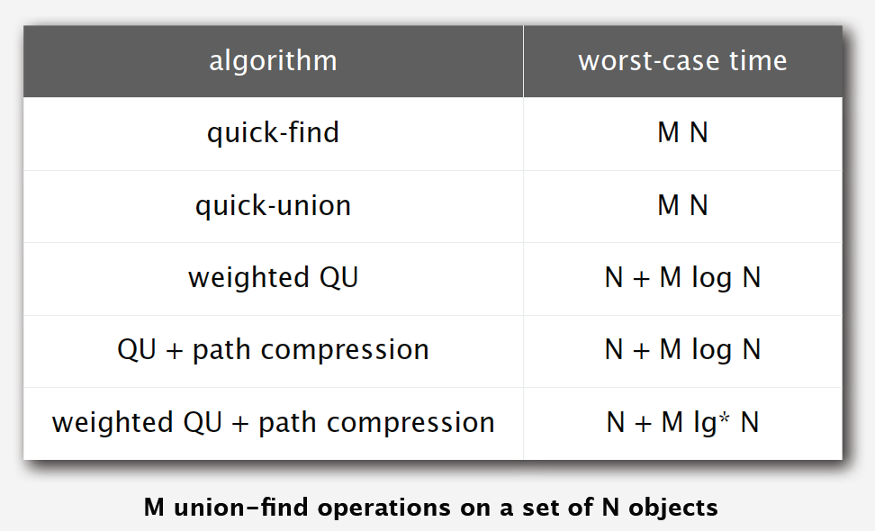
Above all, keep this in mind: super computer won't help, but good algorithm does!
文章作者 sosonemo
上次更新 2015-03-20